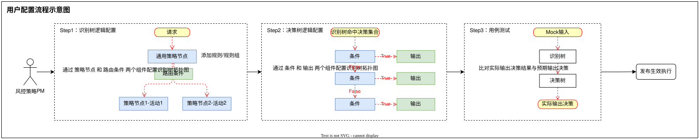
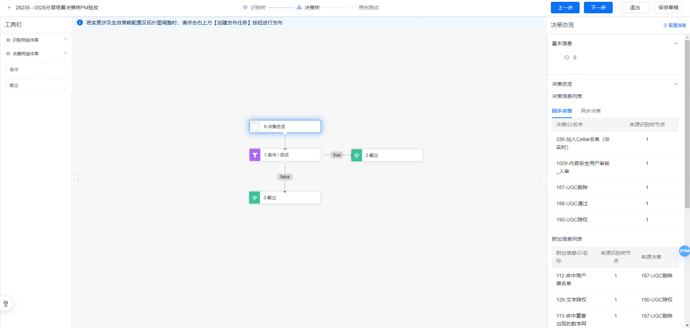
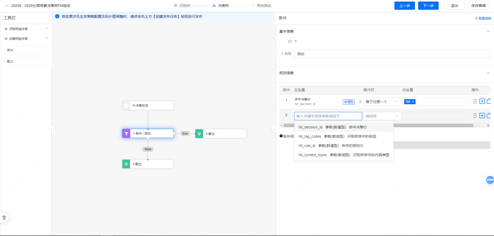
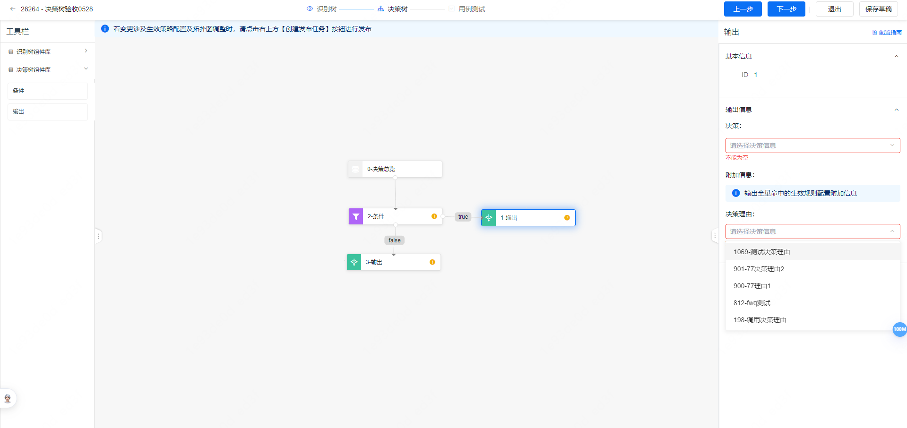

分层场景：决策树
分层场景整体配置方式参考：说明：分层场景
使用地址：https://zeus.sankuai.com/data_zeus_static/#/layerScene
一、概述
-
决策树解决什么问题？
决策树可对于策略包输出的决策集合进行复杂逻辑编排，通过决策编排逻辑输出最终决策至下游。
-
决策树能做什么范围内的决策合并？
目前仅适用于分层场景，进行场景内决策合并。
决策引擎的决策合并现状：
决策引擎包括 场景内合并 和 场景间合并 两次决策合并输出。
单个场景内决策合并：普通场景配置的策略由下游系统Tatooine、保时洁承接，通过规则优先级PK出最终决策；分层场景配置策略由Zeus决策树PK输出最终决策；
多个场景间决策合并：主要由下游系统Tatooine、保时洁承接；
二、操作指南

2.1 决策总览组件
|
功能模块 |
说明 |
图 |
|||||||||||
|---|---|---|---|---|---|---|---|---|---|---|---|---|---|
|
决策总览 组件 |
1.概念说明 决策总览：分层场景的决策树的起始节点。展示当前分层场景识别树配置的策略所涉及到的所有决策/附加信息列表，将作为整个决策树输入进入决策树进行判断。 2.操作说明
3.决策总览节点详情
|
 |
2.2 条件组件
|
功能模块 |
说明 |
图 |
||||||||||
|---|---|---|---|---|---|---|---|---|---|---|---|---|
|
条件组件 |
1.概念说明 条件组件：同IF...ELSE逻辑，当满足何种条件时执行某个输出动作。配置方式为交互式，可对以下参数进行判断，如有更多判断诉求可联系@刘思淼。配置方式参考规则交互式配置说明
2.操作说明
|
 |
2.3 输出组件
|
功能模块 |
说明 |
图 |
||||||||||
|---|---|---|---|---|---|---|---|---|---|---|---|---|
|
输出组件 |
1.概念说明 输出组件：当满足条件时要执行何种输出动作。下拉框可选择输出内容
2.操作说明
|
 |